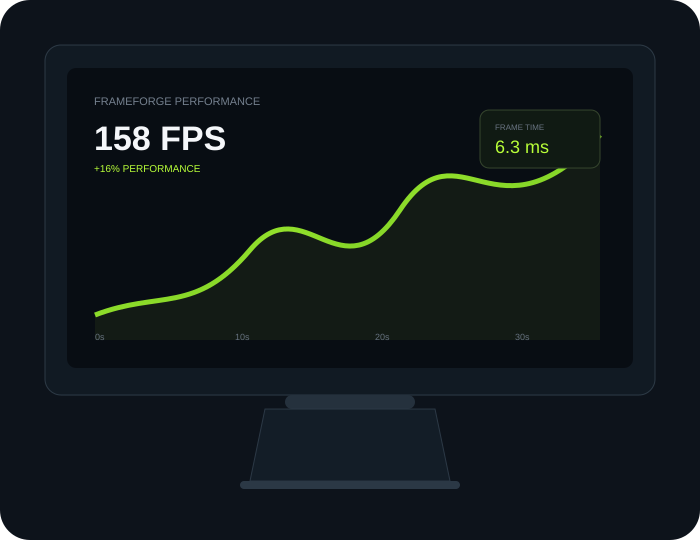
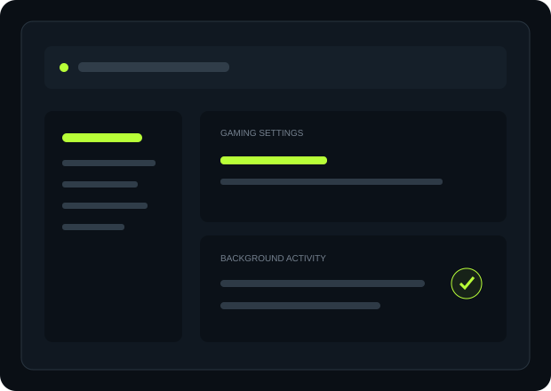
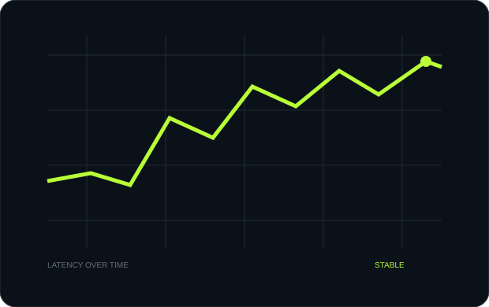
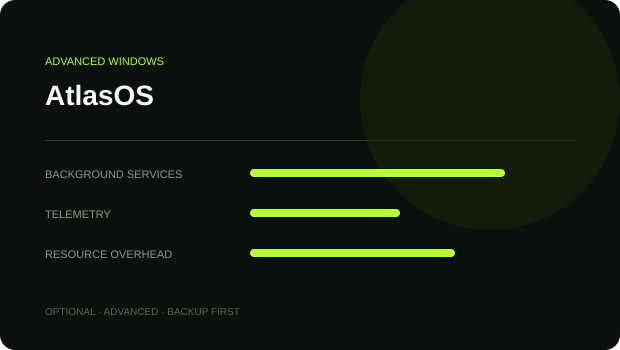

Display & refresh rate
Make sure Windows is actually using your monitor's intended refresh rate.
Windows settings, GPU drivers, FPS, input latency and network optimization — explained simply and tested step by step.

Before changing advanced settings, get Windows, your display and your background apps under control.

Make sure Windows is actually using your monitor's intended refresh rate.
Review Windows gaming features and per-game graphics preferences.
Reduce unnecessary background work without blindly disabling Windows services.
Check GPU drivers, CPU/GPU temperatures and clocks before troubleshooting FPS.
Don't apply twenty tweaks at once. Identify the bottleneck first.
Learn the difference between average FPS, 1% lows and frametime — and diagnose CPU, GPU, RAM and thermal limits.
View method →Use official NVIDIA or AMD drivers before trying obscure “FPS boost” downloads.
Refresh rate, V-Sync, FPS caps, mouse polling and supported low-latency technologies.
Read the checklist →Connection quality is more than the number beside “ping”. Check jitter, packet loss, server region and local congestion.

AtlasOS is an advanced Windows modification. It is optional, requires a supported reinstall process and should be treated as an experiment — not a guaranteed FPS button.
Read AtlasOS GuideBackup → reinstall → drivers → test →
Use the same game, scene and settings. Change one thing. Measure. Keep or revert.
Game-specific guides can sit on top of the same optimization foundation.
Performance Mode, FPS consistency, input delay and Windows.
Explore →Display, Windows and responsiveness fundamentals.
Guide coming nextCPU limits, graphics settings and frame pacing.
Guide coming nextGPU load, shaders, memory, thermals and network checks.
Guide coming nextStart with the free Windows optimization guide and build from there.